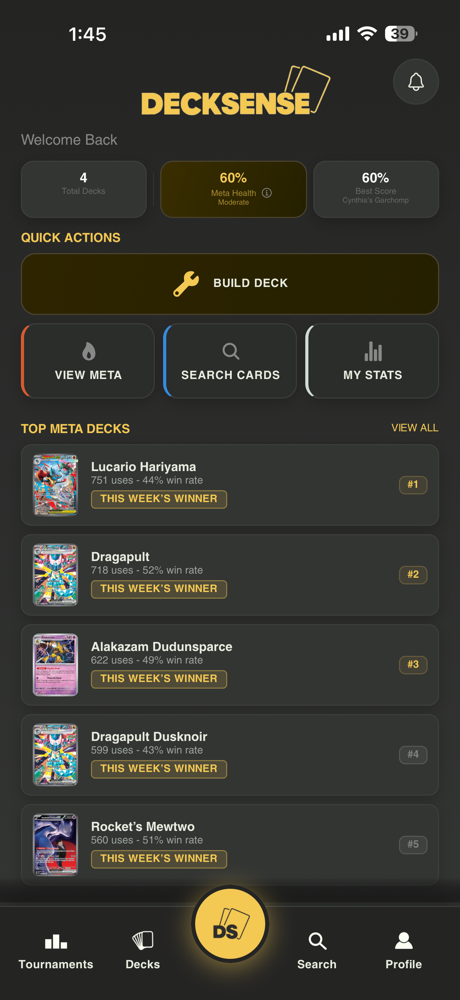
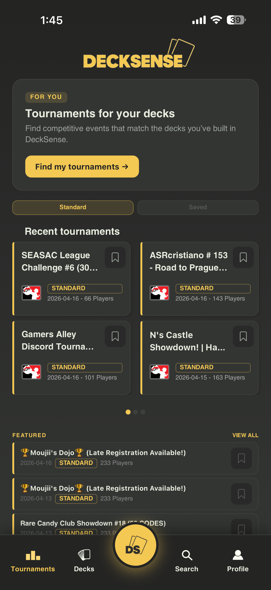
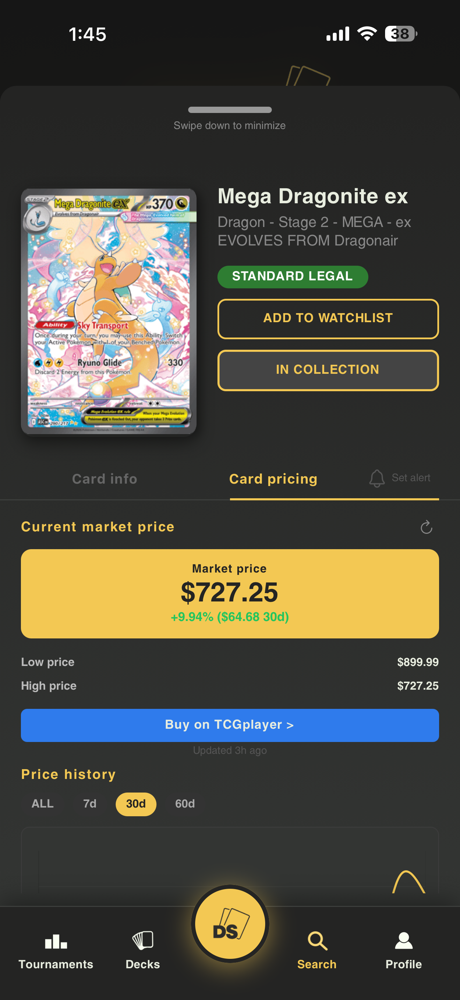
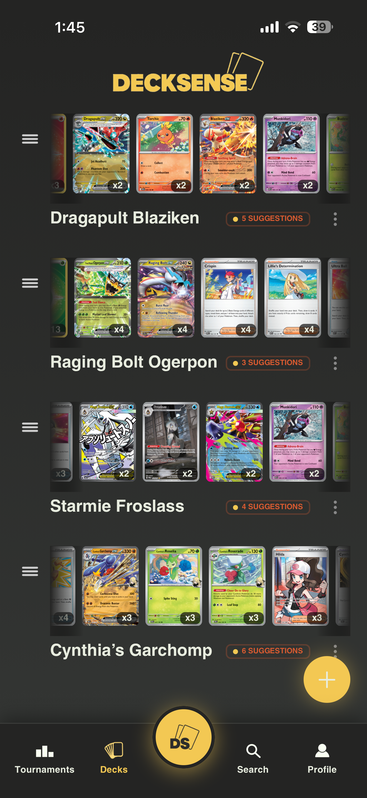
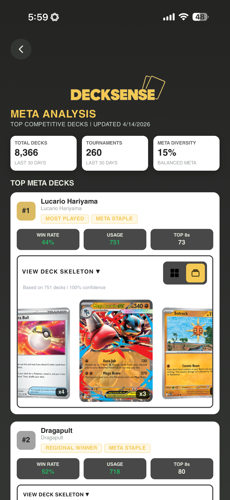

TIER 1
/clear between tasks
Wipe conversation history between unrelated tasks. Message 30 costs 31x more than message 1 because Claude rereads the whole conversation every time.
presentation by Aidan Lowell · originally from decksense.app/present
Vibe
coding
A beginner's guide
From zero to the App Store using AI-powered development.
Visit decksense.app
Using AI tools to build real software by describing what you want, instead of writing every single line yourself.
You only need a few things to get started, and most are free.
Edit code, chat in context, and apply multi-file changes quickly.
Plan features, debug errors, and draft specs or prompts.
One codebase for iOS and Android with sane defaults.
Backends for login, sync, and serverless glue without running servers.
A competitive Pokemon TCG app, live on the App Store.
Build legal lists fast with search, staples, and export.
See what wins regionals and how archetypes trend.
Raw and graded signals to support trades and buys.
Practical tweaks based on your list and format.
Discover events and stay close to the competitive scene.


It is less like programming and more like managing a very fast intern.
Start small: one screen, one flow, one measurable outcome.
Write prompts like specs: inputs, outputs, constraints, and examples.
Build, run on device or simulator, and collect real error messages.
Tighten requirements, add tests where it matters, and iterate.
Most people burn through their token limit because of bad habits, not because they need a bigger plan.
Wipe conversation history between unrelated tasks. Message 30 costs 31x more than message 1 because Claude rereads the whole conversation every time.
Exclude node_modules, dist, build, and log folders. If Claude cannot see it, it cannot accidentally read it or bill you for it.
Add "just give me the code, no explanation" to your prompts. A concise response can use 60-70% fewer tokens than a fully explained one.
Run /compact after each completed feature, not when Claude warns you. Compacting on a bloated context generates a worse summary.
It gets read on every single message, not just every session. Keep it under 200 lines. Cut anything that does not change how Claude behaves.
Each connected MCP server adds roughly 18,000 tokens per message silently. Run /context at the start of each session and disconnect what you are not using.
If a task needs 3 or more files analyzed, spawn a sub-agent and only return summarized insights back to your main session.
Instead of "find where we handle auth," say "check src/auth/middleware.ts, specifically validateToken." Vague exploration triggers multi-file reads.
Your quota does not reset at midnight. It is a rolling window. Tokens you used 5 hours ago start becoming available again, so plan your heavy sessions accordingly.
Claude Code runs in your terminal. If you can access your terminal remotely, you can code from anywhere, including your phone.
Open your terminal and run: npm install -g @anthropic-ai/claude-code then run claude to authenticate. Claude Code lives in your terminal and connects directly to Anthropic's API. No separate app needed.
npm install -g @anthropic-ai/claude-code claude
Use a tool like SSH, Termius, or Tailscale to connect to your computer remotely from your phone. Once connected, you are in your actual terminal, and Claude Code works exactly the same way it does on your laptop.
Tailscale is the easiest option: it creates a private network between your devices. Free tier is enough. Install it on your computer and phone, then SSH in using your machine's Tailscale IP.
Anthropic built a Remote Control feature into Claude Code specifically for mobile use. Activate it in your Claude Code session with /rc. It opens a web interface you can control from any browser, including Safari on your phone.
This is how DeckSense was built away from the desk. Start a task on your laptop, then pick it up on your phone during a commute or between classes.
Build a "Meta Decks" screen for my Expo app. Fetch GET /api/meta/analysis?range=30d. Show a scrollable list sorted by usage: deck name, usage %, win rate, and up to 3 tags per row. Use my existing dark theme and loading/error states. No new dependencies.


Full working screen
Live tournament data
Sorted by usage
Done in roughly 15 minutes
Vibe coding is not a shortcut, it is a different path to the same skills.
Screens, navigation, state, and data flow start to click.
You read stack traces, logs, and repro steps like a builder.
You break problems into smaller, testable pieces.
Clear prompts and constraints get better answers.
You learn versioning, builds, and what good enough means.
Auth, errors, empty states, and performance are part of the job.
It is not all smooth sailing. Here is what actually trips people up.
Long projects need discipline: summaries, files, and checkpoints.
Generated code looks done before it is verified end to end.
You still discover platform quirks, APIs, and store rules the hard way.
Keys belong out of the client; reviews catch mistakes late if you rush.
Fast UI stacks up; polish takes intentional passes.
Small releases teach you more than endless refactors.
Three concrete steps. No excuses.
Step 1
Step 2
Step 3
Anthropic launched its first official technical certification in March 2026. If you are serious about building with AI, this is the credential that validates it.
60 scenario-based questions, 120 minutes, proctored
Free for the first 5,000 Partner Network members, then $99 per attempt
March 12, 2026. Anthropic's first official technical credential
This is not a trivia quiz about API parameter names. Every question drops you into a real production scenario and asks you to make the right architectural call. Agentic loops, multi-agent orchestration, MCP tool integration: the depth is real.
STEP 1
13 free self-paced courses on Skilljar: no paywall, no subscription. Start with Claude 101 and AI Fluency, then move to Building with the Claude API (8.1 hours; this is the core material). Finish with the MCP and Claude Code courses.
STEP 2
The certification is currently available through the Claude Partner Network, which any organization can join for free. The first 5,000 partner employees get access at no cost. Joining also gets you early access to every new certification tier as Anthropic releases them through 2026.
STEP 3
The exam tests real architecture decisions, not memorized facts. Candidates who have built actual agentic systems, worked with MCP integrations, and shipped Claude Code workflows have a significant advantage. Building DeckSense is exactly the kind of experience that prepares you for this exam.
Building DeckSense using Claude Code, Cursor, and Expo Router already covers Domain 3 (Claude Code) and Domain 4 (Prompt Engineering) of the exam in practice. If you go on to wire up MCP servers, design agentic suggestion pipelines, or build multi-agent workflows, you are covering Domains 1 and 2 as well. The certification is the official way to prove that work means something.
You just need to know what you want to build.
Check out DeckSense at decksense.app
Questions?
DeckSense